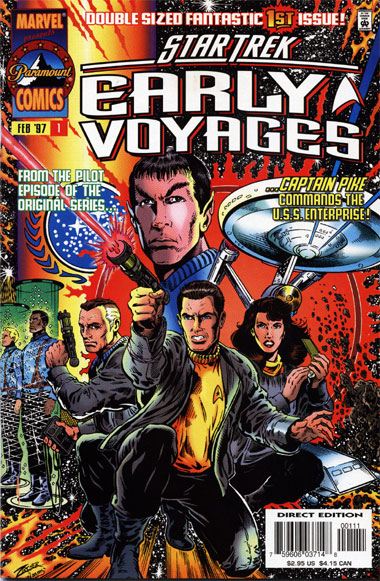
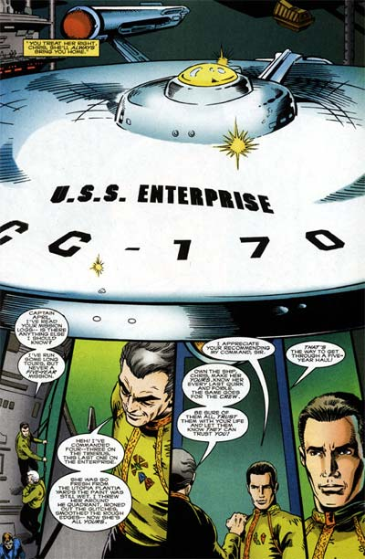

|


|
Gnese
| Episdios I Reflexes
| Palavras do autor | Palavras
do artista Star Trek
Early Voyages, n 01 fevereiro de 1997  Histria: Dan Abnett e Ian Edginton Material produzido por Salvador Nogueira para o Trek Brasilis
Data Estelar: 2252.34 Sinopse: A Enterprise desviada de sua misso ao sistema Marrat e enviada para investigar o sumio da tripulao de pequenas naves da Federao. Como no h nenhum dado significativo dos desaparecimentos, a nica escolha do capito Christopher Pike colocar sua nave como uma isca, na esperana de encontrar os responsveis. A ttica finalmente d resultados quando a Enterprise atacada por uma enorme nave orgnica --que na verdade uma nave-viva, comandada por uma raa chamada de Ngultor. Todas as tentativas de comunicao falham, e Pike abduzido pelos aliengenas, aps um sinal deixar todos os tripulantes desacordados. Quarenta minutos depois, a tripulao se recupera. O doutor Boyce revela tenente Robbins, mais conhecida como Nmero Um, que agora est no comando, que todos os tripulantes sofreram pequenas incises cirrgicas na nuca, por motivos desconhecidos. Os sistemas da nave esto infectados pelo que parece ser uma substncia de origem biolgica. O pouco que ainda funciona suficiente para que se descubra que a Enterprise est presa nave Ngultor, envolvida por tentculos e viajando a dobra 3. Enquanto isso, Pike est a bordo da nave aliengena. Os Ngultor esto vasculhando seus pensamentos para obter informaes sobre os mundos habitados por criaturas como eles. O objetivo dos aliengenas "colh-los" para alimentar sua civilizao. Durante o processo de invaso da mente do capito, Pike revive alguns dos momentos do incio de sua misso de cinco anos da Enterprise, como o dia em que o agora almirante Robert April passava a ele o comando da nave, ou o momento em que ele recrutou a tenente Robbins e o alferes Spock, ainda cadete da Academia, para seus postos de primeiro-oficial e oficial de cincias, ou ainda de uma conversa com seu ordenana Dermot, em que eles discutiam a qualidade dos tripulantes da Enterprise. Spock e o engenheiro-chefe Grace concluem que a nave est para sofrer uma falha geral dos sistemas em algumas horas, e Robbins decide que hora de organizar um grupo de descida para resgatar o capito. Os transportes esto inoperantes, e eles so obrigados a fazer uma caminhada espacial at a nave aliengena. L eles conseguem resgatar o capito, que luta com todas as suas foras para no entregar os segredos da Federao aos Ngultor. Eles libertam o capito, mas acabam cercados por criaturas aliengenas, e s escapam graas ao providencial conserto do teletransporte, a bordo da Enterprise. Spock e o pessoal de cincias biolgicas conseguiram desenvolver um anticorpo baseado em um vrus para combater a infeco que estava desabilitando a Enterprise. A nave consegue recuperar seus sistemas e finalmente escapar dos Ngultor, mas deixando a sensao de que uma chance de coexistncia pacfica com essa raa praticamente impossvel --tendo em vista a forma natural e at sagrada com que esses aliengenas encaram seu costume de alimentarem-se de outros seres vivos inteligentes espalhados pela galxia. A Enterprise finalmente volta a seu curso para o sistema Marrat.  Comentrios Essa primeira histria de "Early Voyages" consegue de forma brilhante introduzir sua premissa, sem sacrificar seu futuro enquanto srie. Em primeiro lugar, evita a desconfortvel tarefa de iniciar a misso de cinco anos do capito Christopher Pike a bordo da Enterprise do marco zero. Ainda assim, usa o inteligente recurso dos flashbacks causados pela invaso aliengena mente de Pike para apresentar a histria da srie e de seus personagens. O visual dos anos 50 visto no piloto "The Cage" substitudo por detalhes muito mais modernos, com cara de anos 90, como o penteado dos tripulantes. Os novos personagens, criados especificamente para a srie, apresentam um visual mais estranho ainda. O engenheiro-chefe Grace um descendente dos ndios Masai, da Terra, mas nascido em Eristas, planeta colonizado pelos terrqueos nos primeiros dias da explorao espacial ps-inveno da dobra espacial. O oficial de comunicaes Nano, de uma espcie chamada Lirin, que possui poderes psicopirotcnicos. Alm disso, a navegadora uma indiana, Sita Mohindas. Tambm h o chefe de transporte Nils Pictcairn e a enfermeira Gabrielle Carlotti. Apesar disso, a srie conseguiu manter um certo aspecto "pr-Clssico" a seu visual nessa primeira histria, com belssima arte e fiel caracterizao dos personagens ( exceo do mdico Phillip Boyce, que no pde ter a mesma cara do ator que o interpretou em "The Cage" por razes legais). A histria fortalece em especial as habilidades da Nmero Um no comando da Enterprise e a determinao de Pike para com sua tripulao e a Federao. O enredo e os dilogos oferecem slido desenvolvimento para os personagens. Como no poderia deixar de ser, h alguns problemas de continuidade. Diz-se que Spock foi chamado para servir com Pike na Enterprise quando a nave j estava dois anos dentro de sua misso de cinco; diz-se que a Enterprise foi construda em Utopia Planitia Yards, em Marte, quando na verdade ela pertence s San Franciso Yards; embora os uniformes sejam os vistos em "The Cage", as listras de patentes vistas aqui foram tiradas do padro estabelecido na Srie Clssica; a Enterprise est equipada com feisers (o que j nem pode mais ser considerado um "erro", depois de Enterprise estabelecer as pistolas de fase, precursoras dos feisers, no sculo 22). Do ponto de vista da histria, o contedo muito bom, mas faz vrios ecos e situaes que j foram vistas em Jornada. Mesmo o recurso da sondagem da mente de Pike acabou sendo uma verso diferenciada do que foi visto em "The Cage", com os Talosianos. H diversas situaes que tambm j conhecemos, como April aconselhando Pike a jamais aceitar uma promoo que o tire do comando de uma nave (de modo quase idntico ao que Kirk faz com Picard em "Generations") e dizendo a April que a Enterprise ser a nica "mulher" que ele amar para valer, e uma frase de Boyce ecoando na cabea de Pike, "You treat her right, Chris, she'll always bring you home" ("Trate-a direito, Chris, ela sempre o levar para casa"), que quase exatamente a mesma que McCoy diz a Data em "Encounter at Farpoint". H entretanto, passagens igualmente interessantes e, melhor ainda, originais, como a noo, dita por Pike, de que ser difcil superar a fama de April no comando da Enterprise, j que "April e Enterprise so sinnimos". Uma bela adio s frases clssicas de Jornada nas Estrelas. Na soma e dos prs e dos contras, "Flesh of my Flesh" se sai muito bem como a abertura de uma srie que s tenderia a melhorar com o passar das edies.
|